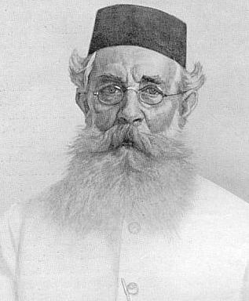
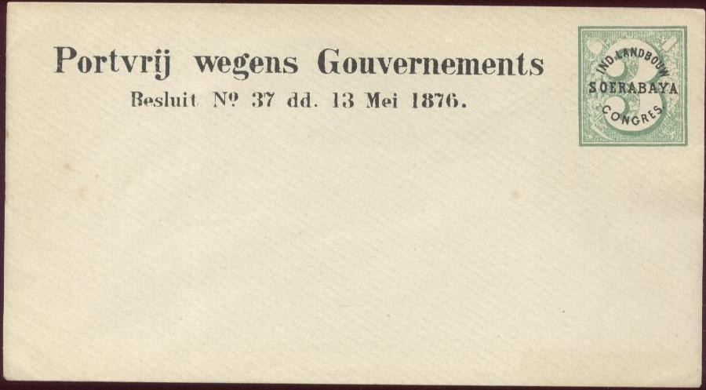

Jean Pierre Moquette
Return To Catalogue -
Netherlands Indies
Note: on my website many of the
pictures can not be seen! They are of course present in the
catalogue;
contact me if you want to purchase the catalogue.

Image found at:
http://www.nationaalherbarium.nl/fmcollectors/m/MoquetteJP.htm (After portrait by J. Veth 1921 R.A. Hoesein
Djajadiningrat. Tijdsch. Ind. Taal Land Volkenk. 67 (1927) 1-35)
J.P. (Jean Pierre) Moquette is a stamp forger who made various
bogus items for Netherlands Indies.
He was born in Goor (The Netherlands) as the son of a local
doctor in 1856. He then went to Netherlands Indies (Dutch Indies)
to work on the sugar plantation of his uncle in Soerabaya (Java)
in 1873, where he later became manager. He then was appointed at
the Agricultural Institute in Buitenzorg (1906). He finally
joined the Archeological Department (Oudheidkundigen Dienst) in
Batavia. As such he did a lot of research on the history of
Indonesian coins. For example he wrote the book 'De munten van
Nederlandsch-Indie' (the coins of Netherlands Indies) in 1906. He
died in 1927.
His bogus items can be summarized as follows:
1) Bogus envelopes for the Agricultural congress in 1878.
These envelopes have inscription 'Portvrij wegens
Gouvernements Besluit No 37 dd. 13 Mei 1876 IND LANDBOUW CONGRES
SOERABAJA'. A design with a '3' is shown on the right
hand side. This design exists in many (8?) colors. These
envelopes were distributed at the congress by him. The remainders
were sold to European dealers (at least to Moens
in Belgium and Friedl in Austria).

Bogus envelope
2) Bogus advertisement overprint on genuine postcards with the
image of King William III in the same color as the design of the
envelope. The inscription reads 'J.MOQUETTE JAVA
SOERABAJA KETEGAN'. The authorities quickly forbid these
envelopes from being used. He has send such a card to the stamp
dealer Friedl in Austria (see
http://www.angelfire.com/ca2/asnp/Moquette.html).

Bogus advertisement overprint by J.P.Moquette in the same color
as the design of the rest of the postcard ('Briefkaart') of 12
1/2 c grey. It also exists on the 5 c lilac postcard. This
overprint was later forbidden by the authorities. I've also seen
a 10 c envelope with this overprint.
3) A 'Union Postale Universelle' provisional overprint on 5 c
postal stationery (Briefkaart) of Netherlands Indies (1885).
Moquette also added 2 1/2 c yellow stamps to these envelopes. The
overprint on these cards as done by Moquette was: 'ALGEMEENE
POSTVEREENIGING (Union postale universelle) UIT NEDERLANDSCH
INDIE (Carte postale des Indes orientales neerlandaises)'.
4) Bogus '5 cent', 'Vijf cent', 'Fijf cent' overprints on 12
1/2 c grey postcards (overprints in black, blue or red color).
The genuine overprint is '5' only. These forgeries are still
listed in my Senf 1895 Postwertzeichen Katalog, but with the
remark that these overprints were not official. Some small '5'
overprints exist, these might also have been produced by
Moquette. He has send one of those to the stamp dealer Moens in
Belgium (http://www.angelfire.com/ca2/asnp/Moquette.html). Moens
in turn sold some of these envelopes to the famous stamp
collector Philippe de Ferrari in 1883.
5) Bogus '5 CENT' overprint on 7 1/2 c brown
postal stationery (BRIEFKAART).
Bogus '15 cents' on 25 c postcard made by Moquette
5) Bogus '15 cent' overprint on 25 c violet
postal stationery (envelope).
6) Stamps with advertisement overprints, such as 'Moquette
Stamp imp' in various colors
Reduced size. This could be a bogus overprint made by
J.P.Moquette
Furthermore, the following text can be found in
'Le Timbre Poste' by Moens No. 228 page 123:
INDES NÉERLANDAISES.
M. P. Moquette nous envoie sans mot dire l'enveloppe l0 cent
surchargée de trois lignes d'inscription oblique portant:
Briefomslag tien cent: la 2e et 3e ligne ont cette inscription
qui recommence, pour former la ligne complète. Nous ne savons si
c'est par caprice d'amateur ou si c'est l'administration des
postes qui s'est payé cette fantaisie.
10 cent, brun avec surcharge.
Il 'Le Timbre Poste' No 252, page 94, 1883 a
letter of Philippe de Ferrari (the famous stamp collector) can be
found adressed to the stamp dealer Moens,
thereby removing the confusion about a Mr. M. (which was supposed
to be Moquette and not Moens):
Paris, le 25 octobre 1885.
Cher Monsieur Moens, L'article du dernier bulletin de la
Société française de timbrologie sur lequel vous attirez mon
attention, où certaines cartes des Indes néerlandaises que vous
m'avez vendues, sont déclarées fausses par moi, en accusant M.
M... de les avoir faites, est complètement erroné. J'ai pu dire
que ces surcharges avaient été obtenues par complaisance, comme
il y en a tant d'exemples, mais je m'étonne qu'on me prête des
idées que je n'ai jamais eues et encore moins formulées. Vous
savez bien, cher Monsieur, que je vous ai en trop haute estime
que pour vous supposer un instant capable de faire de faux
timbres ou de fausses surcharges. L'initiale M qu'on a
renseignée, je ne sais trop pourquoi, n'est pas celle de votre
nom, mais celle de M. Moquette.
Je ne m'explique pas non plus le motif pour lequel le secrétaire
de la Société n'a pas dégagé immédiatement votre nom, comme
vous le lui avez demandé avec raison. Aussi, pour éviter tout
malendu qu'une interprétation erronée a pu donner à mes
paroles, je vous autorise de faire l'usage qu'il vous plaira de
cette lettre. Je suis heureux de profiter de cette circonstance
pour vous renouveler l'assurance de ma vieille affection, sur
laquelle vous pouvez toujours fermement compter.
A vous, de tout coeur,
PH DE FERRARI.
Websites
http://www.angelfire.com/ca2/asnp/Moquette.html
http://www.puntstempels.nl/moquetteartikel.htm
(in Dutch)
Copyright by Evert Klaseboer